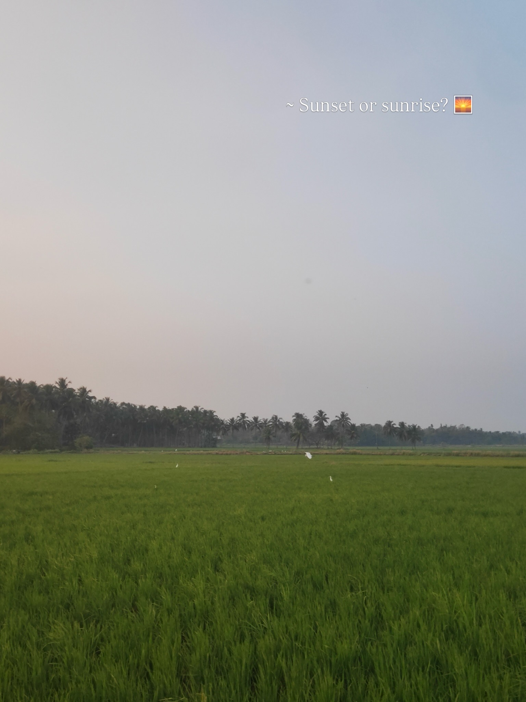
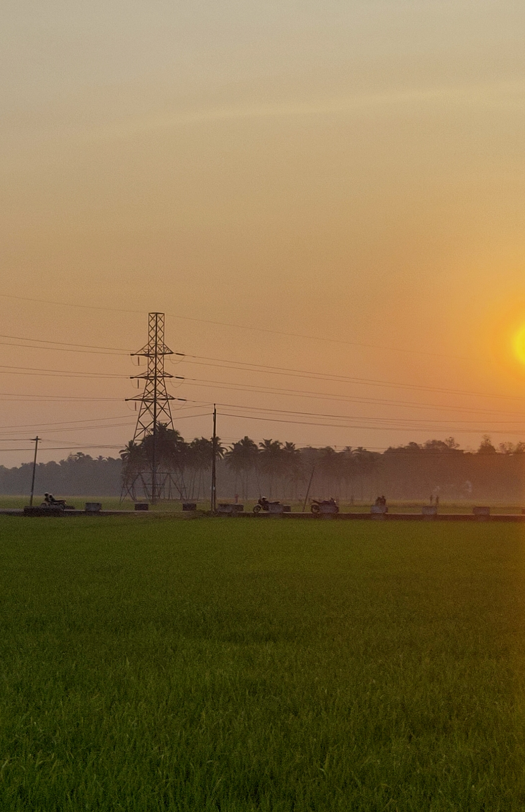
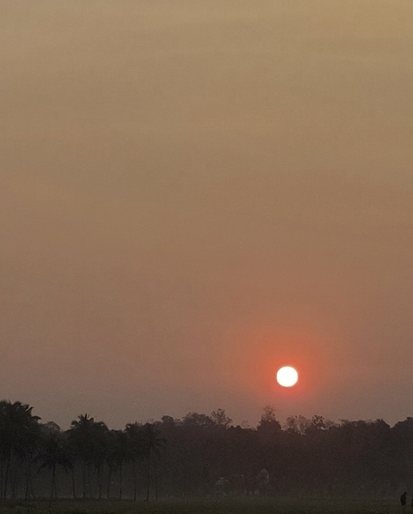
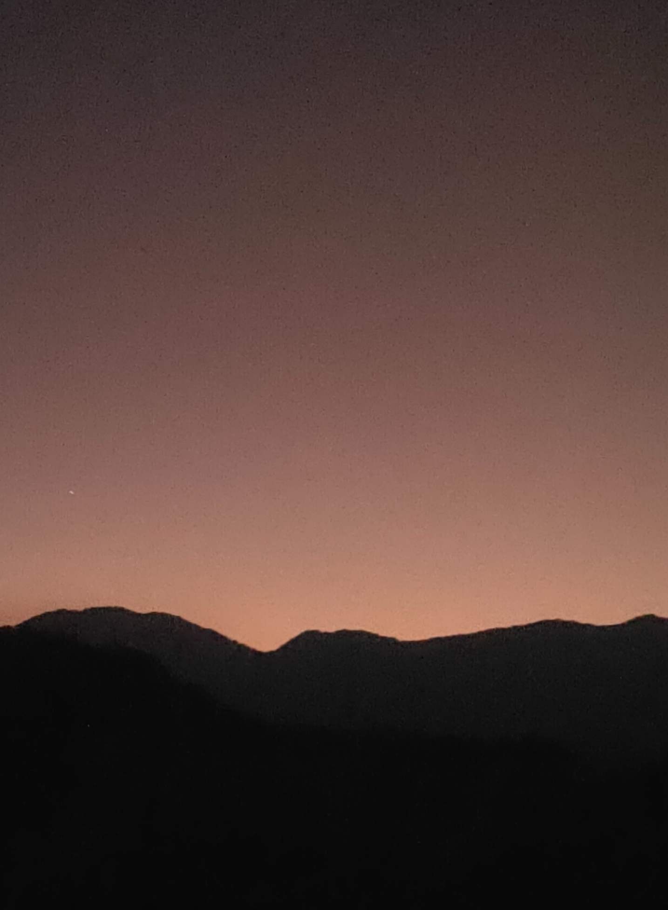
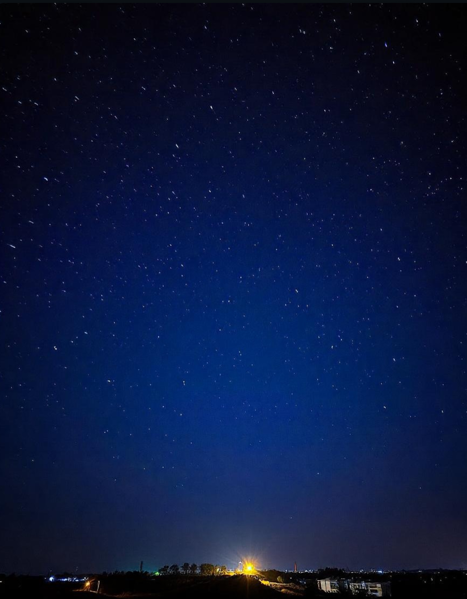
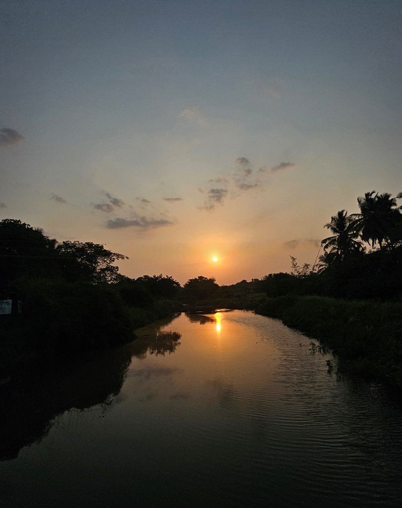

Outside Academics.
Outside academics, I do photography and philosophy, especially existential reflection through art. I travel a lot, and I am drawn to places, conversations, and the small details people usually pass by.
More than almost anything, I love meeting people, listening to them, and understanding how they see life: their point of view, their excitement, their fears, their strange little theories, and the stories that made them who they are. I learn a lot from that, and I genuinely enjoy being around people who are open to a real conversation.
You can connect with me for this too. Not only research, not only work; just conversations, photographs, ideas, travel, art, or whatever you are currently thinking deeply about.
Photography.
A few selected frames. More are on lenxoflight.





